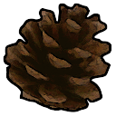

Submitting a Character
To create characters here at Underwood, you submit their bio to their Clan roster: RavineClan:
rc-roster  Outsiders:
Outsiders:
hc-roster
Your character must be approved by staff before you can post with them, to make sure they're realistic given the traditional setting of the world, and also that they fit in with existing history. This is a painless process though and how you write your bio aside from a few requirements is up to you.
In the spirit of keeping things simple, there is no minimum word count for bios. We just ask that you provide a good baseline of information about your character.
If you'd like to plan out your character in advance with others, feel free to head to # plotting first. You're very welcome to plot your characters ahead of time to see how they might fit into things and so you can backwrite their history.
You can also check out # adoptions if you want to apply for a character with a pre-existing plot or relations.
Character Rules
- For now, you can have a maximum of 3️⃣ characters.
- Only one character can start as a city cat. We intend to expand this limit but at a later stage of the plot.
- All characters are real-timed ⌛ except for kits, which are double-timed until apprentice age (aged two moons for every one IRL month, until they are six moons old).
- If you decide to archive a character to add a new one, be aware your archived character will be removed permanently from roleplay, and won't be able to be posted with again unless you ask staff for a special exception.
Character Bio Setup
We have a basic character bio template to use when submitting characters! You are welcome to modify/add additional sections, so long as the base information already specified is kept in some form. Please only post your bio when it is ready to be submitted.- Start by making a new thread in rc rooster or hc-roster. Title it with your character's name and add the
!pendingtag. - Add your character image to your thread first and send it. Don't add any text yet—this will ensure the image is at the top of your thread.
- Add your character information to the thread, using the code provided below.
- Submit the bio for review by tagging staff in the thread when you are finished.
BIO CODE
Because individual discord messages are capped at 2000 characters (roughly 300 words), we recommend splitting each section of bio code out into their own messages. ⚠️ Important: Don't remove the_ _ at the beginning of sections. These add the line break between each section.
IMAGE
Post this first!url here
📋 GENERAL INFORMATION
# CHARACTER NAME
**Name:**
**Rank:**
**Gender:**
**Age:**
🖍️ APPEARANCE
_ _
## » APPEARANCE
-# Short description here.
Long description here.
💬 PERSONALITY
_ _
## » PERSONALITY
Personality description here.
📚 HISTORY
_ _
## » HISTORY
- History event one.
- History event two.
❕ If you run out of room in single message for all of your text for one part of your bio, you can finish that paragraph wherever it falls under the character limit, and then start your next paragraph in a new message like so:
_ _
Next paragraph here.
BIO IMAGE
There are some things to know when posting images to discord:- Firstly, the maximum width an image uploaded directly will display at on large screens is 550px.
- If an image is linked 🔗 via URL, this then shrinks to 400px.